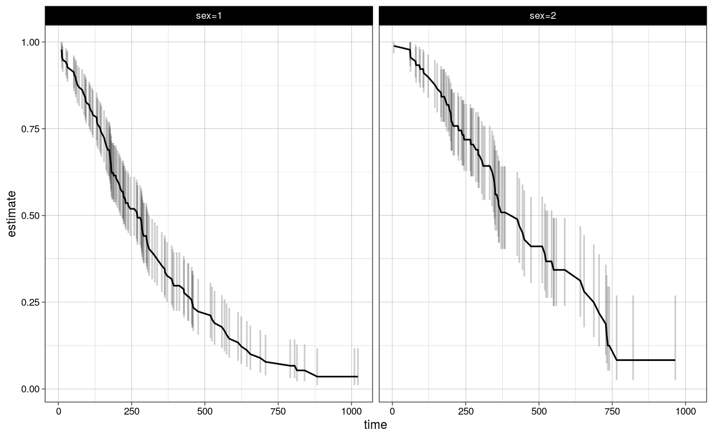

Table of Contents
Purpose
To explore different options to produce a survival plot.
Example
A typical example survival model with a binary stratum.
fit <- survfit(Surv(time, status) ~ sex, data = lung)
fit
Call: survfit(formula = Surv(time, status) ~ sex, data = lung)
n events median 0.95LCL 0.95UCL
sex=1 138 112 270 212 310
sex=2 90 53 426 348 550Survminer
Plot survival curves by strata using survminer.
ggsurvplot(fit, data = lung)
ggsurvplot(
fit, # survfit object with calculated statistics.
data = lung, # data used to fit survival curves.
risk.table = TRUE, # show risk table.
pval = TRUE, # show p-value of log-rank test.
conf.int = TRUE, # show confidence intervals for
# point estimaes of survival curves.
xlim = c(0,1000), # present narrower X axis, but not affect
# survival estimates.
break.time.by = 500, # break X axis in time intervals by 500.
ggtheme = theme_minimal(), # customize plot and risk table with a theme.
risk.table.y.text.col = T, # colour risk table text annotations.
risk.table.y.text = FALSE # show bars instead of names in text annotations
# in legend of risk table
)
GGfortify
autoplot(fit)
Broom
First tidy the survival object.
td <- tidy(fit)
td %>% glimpse()
Observations: 206
Variables: 9
$ time <dbl> 11, 12, 13, 15, 26, 30, 31, 53, 54, 59, 60, 65, 7…
$ n.risk <dbl> 138, 135, 134, 132, 131, 130, 129, 128, 126, 125,…
$ n.event <dbl> 3, 1, 2, 1, 1, 1, 1, 2, 1, 1, 1, 2, 1, 1, 2, 1, 1…
$ n.censor <dbl> 0, 0, 0, 0, 0, 0, 0, 0, 0, 0, 0, 0, 0, 0, 0, 0, 0…
$ estimate <dbl> 0.9782609, 0.9710145, 0.9565217, 0.9492754, 0.942…
$ std.error <dbl> 0.01268978, 0.01470747, 0.01814885, 0.01967768, 0…
$ conf.high <dbl> 1.0000000, 0.9994124, 0.9911586, 0.9866017, 0.981…
$ conf.low <dbl> 0.9542301, 0.9434235, 0.9230952, 0.9133612, 0.903…
$ strata <chr> "sex=1", "sex=1", "sex=1", "sex=1", "sex=1", "sex…Then plot with ggplot.
surv_plot <- td %>%
ggplot(aes(time, estimate, group = strata)) +
geom_line() +
geom_ribbon(aes(ymin = conf.low, ymax = conf.high), alpha = .2)
surv_plotPlot risk table
surv_tab <-
td %>%
mutate(
row = if_else(strata == "sex=1", 1, 0)
) %>%
ggplot(aes(x = time, y = row , label = n.risk)) +
geom_text()
surv_tab
surv_plot / surv_tab
How to recreate the risk table in surv_miner.
Need to:
- within strata
- go through the sequence of time points to plot
- find last time point relative to each break
- round up if not exactly measured at that time point i.e. time = 8 becomes 10
td
# A tibble: 206 x 9
time n.risk n.event n.censor estimate std.error conf.high conf.low
<dbl> <dbl> <dbl> <dbl> <dbl> <dbl> <dbl> <dbl>
1 11 138 3 0 0.978 0.0127 1 0.954
2 12 135 1 0 0.971 0.0147 0.999 0.943
3 13 134 2 0 0.957 0.0181 0.991 0.923
4 15 132 1 0 0.949 0.0197 0.987 0.913
5 26 131 1 0 0.942 0.0211 0.982 0.904
6 30 130 1 0 0.935 0.0225 0.977 0.894
7 31 129 1 0 0.928 0.0238 0.972 0.885
8 53 128 2 0 0.913 0.0263 0.961 0.867
9 54 126 1 0 0.906 0.0275 0.956 0.858
10 59 125 1 0 0.899 0.0286 0.950 0.850
# … with 196 more rows, and 1 more variable: strata <chr>
# this is the sequence
breaks <- c(0, 200, 400, 600, 800, 1000, 1200)
# filtering on the sequence
td %>%
group_by(strata) %>%
arrange(time) %>%
filter(time < breaks) %>%
slice(n()) %>%
ungroup()
# A tibble: 2 x 9
time n.risk n.event n.censor estimate std.error conf.high conf.low
<dbl> <dbl> <dbl> <dbl> <dbl> <dbl> <dbl> <dbl>
1 1022 1 0 1 0.0357 0.605 0.117 0.0109
2 740 4 0 1 0.125 0.440 0.295 0.0527
# … with 1 more variable: strata <chr>
sumfit <- summary(fit, times=c(0, 250, 500, 750, 1000, 1250))
n_risk <- data_frame('Arm' = sumfit$strata,
'Time' = sumfit$time,
'Nrisk' = sumfit$n.risk)
labels <- data_frame ('Arm' = "Time",
'Time' = sumfit$time,
'Nrisk' = sumfit$time)
n_risk
# A tibble: 9 x 3
Arm Time Nrisk
<fct> <dbl> <dbl>
1 sex=1 0 138
2 sex=1 250 62
3 sex=1 500 20
4 sex=1 750 7
5 sex=1 1000 2
6 sex=2 0 90
7 sex=2 250 53
8 sex=2 500 21
9 sex=2 750 3
fit
Call: survfit(formula = Surv(time, status) ~ sex, data = lung)
n events median 0.95LCL 0.95UCL
sex=1 138 112 270 212 310
sex=2 90 53 426 348 550
summary(fit, times=c(0, 250, 500, 750, 1000, 1250))
Call: survfit(formula = Surv(time, status) ~ sex, data = lung)
sex=1
time n.risk n.event survival std.err lower 95% CI upper 95% CI
0 138 0 1.0000 0.0000 1.0000 1.000
250 62 65 0.5192 0.0433 0.4409 0.611
500 20 31 0.2232 0.0402 0.1569 0.318
750 7 13 0.0781 0.0276 0.0390 0.156
1000 2 3 0.0357 0.0216 0.0109 0.117
sex=2
time n.risk n.event survival std.err lower 95% CI upper 95% CI
0 90 0 1.000 0.0000 1.0000 1.000
250 53 24 0.719 0.0490 0.6287 0.821
500 21 18 0.411 0.0626 0.3050 0.554
750 3 10 0.125 0.0549 0.0527 0.295
surv_tab <-
n_risk %>%
mutate(
row = factor(if_else(Arm == "sex=1", 1, 0))
) %>%
ggplot(aes(x = Time, y = row , label = Nrisk)) +
geom_text()
surv_tab
surv_plot / surv_tabNo confidence intervals
td %>%
ggplot(aes(time, estimate, group = strata, colour = strata)) +
geom_line() Confidence interval
td %>%
ggplot(aes(time, estimate, group = strata)) +
geom_line() +
geom_linerange(aes(ymin = conf.low, ymax = conf.high), alpha = 0.2) 
Faceted
td %>%
ggplot(aes(time, estimate, group = strata)) +
geom_line() +
geom_linerange(aes(ymin = conf.low, ymax = conf.high), alpha = 0.2) +
facet_wrap( ~ strata)
With censoring
td %>%
ggplot(aes(time, estimate, group = strata)) +
geom_line() +
geom_point(data = td %>% filter(n.censor > 0), aes(time, estimate), alpha = 0.5)With annotations
library(ggrepel)
td %>%
ggplot(aes(time, estimate, group = strata)) +
geom_line() +
geom_text_repel(data = td %>% group_by(strata) %>% slice(n()),
aes(label = strata),
size = 4.5,
point.padding = .2,
box.padding = .3,
force = 1,
min.segment.length = 0
)
Audience and asthetics
Same plot with different looks.
Explore
td %>%
ggplot(aes(time, estimate, group = strata, colour = strata)) +
geom_line() +
geom_point() +
theme_linedraw()Report
n_risk <-
n_risk %>%
mutate(row = if_else(Arm == "sex=1", -0.05, -0.10))
td %>%
ggplot(aes(time, estimate, group = strata)) +
geom_line() +
geom_point(data = td %>% filter(n.censor > 0), aes(time, estimate), alpha = 0.5) +
geom_text(data = n_risk, aes(x = Time, y = row, label = Nrisk, group = Arm)) +
theme_minimal()Presentation
Publication
Shiny / interactive
Annotations and tooltips using plotly?
Competing risks
mfit1 <- survfit(Surv(futime, death) ~ sex, data=mgus2)
mfit1 %>%
tidy() %>%
ggplot(aes(time, estimate, group = strata, colour = strata)) +
geom_line()
etime <- with(mgus2, ifelse(pstat==0, futime, ptime))
event <- with(mgus2, ifelse(pstat==0, 2*death, 1))
event <- factor(event, 0:2, labels=c("censor", "pcm", "death"))
mfit2 <- survfit(Surv(etime, event) ~ sex, data=mgus2)
mfit2 %>%
tidy() %>%
ggplot(aes(time, estimate, group = state, colour = state)) +
geom_line() +
facet_wrap(~ strata)Multi-state
# multi-state
fitCI <- survfit(Surv(stop, status * as.numeric(event), type = "mstate") ~ 1,
data = mgus1, subset = (start == 0))
td_multi <- tidy(fitCI)
td_multi
# A tibble: 474 x 9
time n.risk n.event n.censor estimate std.error conf.high conf.low
<dbl> <int> <int> <int> <dbl> <dbl> <dbl> <dbl>
1 6 0 0 0 0 0 NA NA
2 7 0 0 0 0 0 NA NA
3 31 0 0 0 0 0 NA NA
4 32 0 0 0 0 0 NA NA
5 39 0 0 0 0 0 NA NA
6 60 0 0 0 0 0 NA NA
7 61 0 0 0 0 0 NA NA
8 152 0 0 0 0 0 NA NA
9 153 0 0 0 0 0 NA NA
10 174 0 0 0 0 0 NA NA
# … with 464 more rows, and 1 more variable: state <fct>
td_multi %>%
ggplot(aes(time, estimate, group = state, fill = state)) +
geom_line(aes(color = state)) +
geom_ribbon(aes(ymin = conf.low, ymax = conf.high), alpha = .25)Cox model
cfit <- coxph(Surv(time, status) ~ age + sex, lung)
tidy(cfit)
# A tibble: 2 x 7
term estimate std.error statistic p.value conf.low conf.high
<chr> <dbl> <dbl> <dbl> <dbl> <dbl> <dbl>
1 age 0.0170 0.00922 1.85 0.0646 -0.00103 0.0351
2 sex -0.513 0.167 -3.06 0.00218 -0.841 -0.185
tidy(cfit, exponentiate = TRUE)
# A tibble: 2 x 7
term estimate std.error statistic p.value conf.low conf.high
<chr> <dbl> <dbl> <dbl> <dbl> <dbl> <dbl>
1 age 1.02 0.00922 1.85 0.0646 0.999 1.04
2 sex 0.599 0.167 -3.06 0.00218 0.431 0.831
lp <- augment(cfit, lung)
risks <- augment(cfit, lung, type.predict = "risk")
expected <- augment(cfit, lung, type.predict = "expected")
glance(cfit)
# A tibble: 1 x 15
n nevent statistic.log p.value.log statistic.sc p.value.sc
<int> <dbl> <dbl> <dbl> <dbl> <dbl>
1 228 165 14.1 0.000857 13.7 0.00105
# … with 9 more variables: statistic.wald <dbl>, p.value.wald <dbl>,
# r.squared <dbl>, r.squared.max <dbl>, concordance <dbl>,
# std.error.concordance <dbl>, logLik <dbl>, AIC <dbl>, BIC <dbl>
# also works on clogit models
resp <- levels(logan$occupation)
n <- nrow(logan)
indx <- rep(1:n, length(resp))
logan2 <- data.frame(
logan[indx,],
id = indx,
tocc = factor(rep(resp, each=n))
)
logan2$case <- (logan2$occupation == logan2$tocc)
cl <- clogit(case ~ tocc + tocc:education + strata(id), logan2)
tidy(cl)
# A tibble: 9 x 7
term estimate std.error statistic p.value conf.low conf.high
<chr> <dbl> <dbl> <dbl> <dbl> <dbl> <dbl>
1 toccfarm -1.90 1.38 -1.37 1.70e- 1 -4.60 0.810
2 toccopera… 1.17 0.566 2.06 3.91e- 2 0.0581 2.28
3 toccprofe… -8.10 0.699 -11.6 4.45e-31 -9.47 -6.73
4 toccsales -5.03 0.770 -6.53 6.54e-11 -6.54 -3.52
5 tocccraft… -0.332 0.0569 -5.84 5.13e- 9 -0.444 -0.221
6 toccfarm:… -0.370 0.116 -3.18 1.47e- 3 -0.598 -0.142
7 toccopera… -0.422 0.0584 -7.23 4.98e-13 -0.537 -0.308
8 toccprofe… 0.278 0.0510 5.45 4.94e- 8 0.178 0.378
9 toccsales… NA 0 NA NA NA NA
glance(cl)
# A tibble: 1 x 15
n nevent statistic.log p.value.log statistic.sc p.value.sc
<int> <dbl> <dbl> <dbl> <dbl> <dbl>
1 4190 838 666. 1.90e-138 682. 5.01e-142
# … with 9 more variables: statistic.wald <dbl>, p.value.wald <dbl>,
# r.squared <dbl>, r.squared.max <dbl>, concordance <dbl>,
# std.error.concordance <dbl>, logLik <dbl>, AIC <dbl>, BIC <dbl>
ggplot(lp, aes(age, .fitted, color = sex)) +
geom_point()
ggplot(risks, aes(age, .fitted, color = sex)) +
geom_point()
ggplot(expected, aes(time, .fitted, color = sex)) +
geom_point()